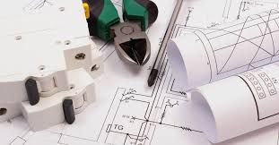
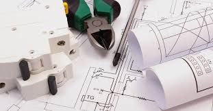
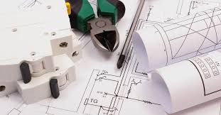

أنشئت كلية الهندسة الميكانيكية والكهربائية عام/1963/ كمعهد عال صناعي استناداً إلى القرار الجمهوري رقم/99/ لعام 1963 وتحولت إلى كلية الهندسة الميكانيكية والكهربائية عام 1972 استناداً إلى المرسوم التشريعي رقم /38/لعام 1972 وألحقت كلية الهندسة الميكانيكية والكهربائية بجامعة دمشق كإحدى المؤسسات التعليمية والبحثية في قطاع التعليم العالي ثم تطورت الكلية وقفزت قفزات نوعية خلال السنوات القليلة الماضية وهي ترفد ميادين الإنتاج الصناعي المختلفة والاتصالات والحوسبة بمختصين من ذوي المؤهلات العلمية والعملية لمواكبة التطور والتقدم التقني العالي . كان الهدف الأساسي هو دعم صناعة الطاقة وهي أي المحطات الحرارية كانت القطاع التجريبي الحقيقي المتاح حينها وبالتالي فقد كانت الهندسة الحرارية وهندسة الطاقة الكهربائية الأقسام الأكثر أهمية وكفاءة في المعهد العالي والكلية.
